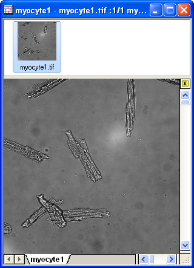

2D FFT とフィルタ
2D-FFT-and-Filter
サマリー
2D FFT（2次元の高速フーリエ変換）は、2D信号（行列）データに対して周波数スペクトルを分析することができます。逆に、2D IFFT（2次元逆高速フーリエ変換）は2次元周波数スペクトルから2D信号を再構成することができます。OriginProは、2D信号にフィルタリングを実行する2D FFTフィルタと一緒に、時間と2次元の周波数ドメイン間の変換を提供します。
学習する項目
このチュートリアルでは、以下の項目について説明します。
- 画像をデータに変換する
- 中心部へのDCシフトのある行列データに2D FFTを実行する
- 2D FFTの結果に2D IFFT実行し、元の行列データを修正する
- 行列データに対して2D FFTフィルタを実行する
ステップ
2D FFT
- 新しい行列ブックを用意し、メインメニューからデータ：インポート：イメージファイルを行列へインポートを選択し、<Originのインストールフォルダ>\Samples\Image Processing and Analysis\cell.jpg を選択し、インポートします。
-

- Originはイメージデータを直接解析できないので、画像を行列データに変更する必要があります。そのためには、メニューのイメージ：変換：データに変換を選択し、データに変換: img2mダイアログを開きます。種類をbyte(1)にします。
-
- OK をクリックして変換を終了します。結果は下図のようになります。メニューから表示：データモードまたは表示：イメージモードを選択して表示モードの切り替えが可能です。
-

- 変換した行列データをアクティブにし、メニューから解析：信号処理：FFT：2D FFTを選択して2D FFT: fft2 ダイアログを開きます。DC成分を中央に移動にチェックを付けてDCを中央にシフトします。出力の項目では、複素行列と対数振幅行列にチェックを付けます。
-
- OKボタンをクリックし、FFT結果を生成します。1つの行列ブックに複素行列と対数振幅行列が出力されます。対数振幅行列をイメージモードにする（表示：イメージモード）と、下図のようになります。
-
2D IFFT
- 2D FFTのセクションで出力した、複素行列（FFT2_Complex1）から操作を始めます。ウィンドウをアクティブにします。
- メニューから解析：信号処理：FFT：2D IFFTを選択して2D IFFT: ifft2ダイアログを開きます。
- 入力行列は複素行列なので、ダイアログの虚数行列は必要ありません。DCはシフトされたので、移動を元に戻すにチェックを付けます。出力の項目では実行列と虚数行列にチェックを付けます。
-
- OKボタンをクリックすると、2つの行列データが同じ行列ブックに出力されます。
-

- 比べると、IFFTにより、元のデータが修復されたのがわかります。
-
2D FFTフィルタ
- 新しい行列ブックを用意し、メインメニューからデータ：インポート：イメージファイルを行列へインポートを選択し、<Originのインストールフォルダ>\Samples\Image Processing and Analysis\myocyte1.tif を選択し、インポートします。
- 
- メニューのイメージ：変換：データに変換を選択し、すると、「データに変換: img2m」ダイアログボックスが開きます。種類をbyte(1)にし、OKボタンをクリックします。
-
- 変換した行列データをアクティブにし、メニューから解析：信号処理：FFT：2D FFTフィルタを選択して、2D FFT: fft_filter2ダイアログを開きます。
- ダイアログの自動プレビューチェックボックスにチェックを付け、右パネルで結果を表示します。フィルタ種類をバンドパスにし、下カットオフ値と上カットオフ値を0.05と0.25に設定します。他の設定項目はデフォルトのままにします。
-
- OK をクリックして実行します。出力結果から、バックグラウンドのノイズが除去できたことがわかります。
-